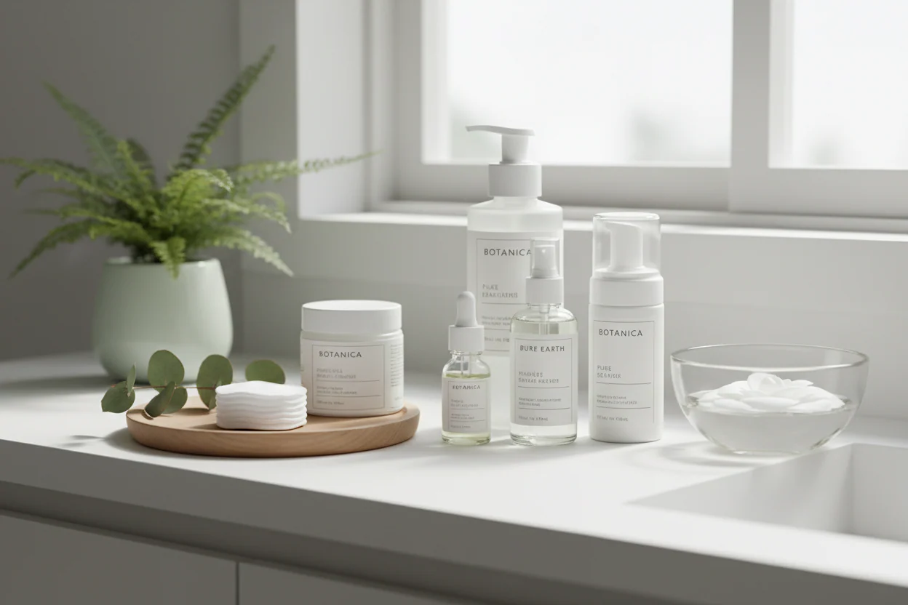
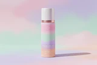

Чому догляд за обличчям важливий?
Спершу поговоримо про те, чому так важливо піклуватися про обличчя. Ваше обличчя — це як полотно, і жоден художник не хоче малювати на брудному полотні, правда? (Хіба що ви прагнете авангардного ефекту!)
Крок 1: Очищуйте

Час змити бруд та забруднення дня! Знайдіть засіб для очищення, що підходить саме вашому типу шкіри. Пам’ятайте: чисте обличчя = щасливе обличчя! (Так само, як чиста кімната = щаслива кімната… або принаймні так кажуть!)
Крок 2: Зволоження, зволоження і ще раз зволоження!

Зволожуйте, зволожуйте і знову зволожуйте! Гідратація — ключ до пружної та сяючої шкіри. Уявіть собі крем для обличчя як великий ковток води для вашого обличчя. Давайте, до дна!
Крок 3: Захищайте своє прекрасне обличчя
Не забувайте про сонцезахисний крем! Захищайте шкіру від шкідливих сонячних променів, щоб запобігти передчасному старінню та сонячним ушкодженням. А ще хто не любить гарну нагоду надіти стильний капелюшок?
Крок 4: Піклуйтеся про себе
Подаруйте своєму обличчю трохи додаткової уваги з тижневими масками для обличчя або розслаблюючим масажем. Піклуйтеся про себе як справжня королівська особа! (Час для огіркових слайсів та пухнастого халата!)
Крок 5: Красивий сон

Не дарма його називають «сон краси»! Обов’язково добре висипайтеся, щоб шкіра могла відновлюватися і омолоджуватися вночі. Хто б міг подумати, що сон може бути таким корисним?